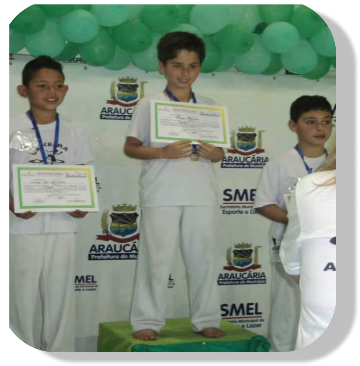
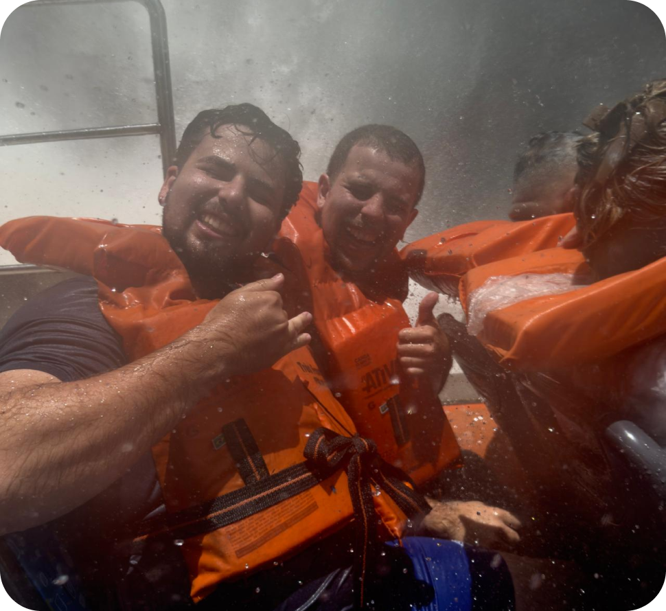
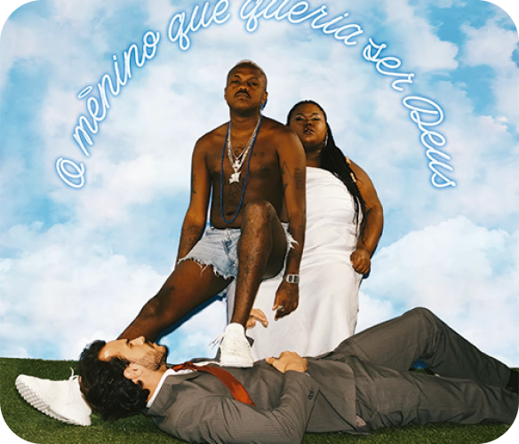
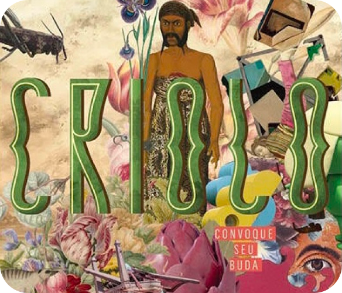
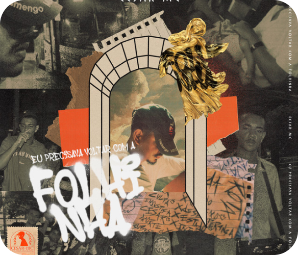
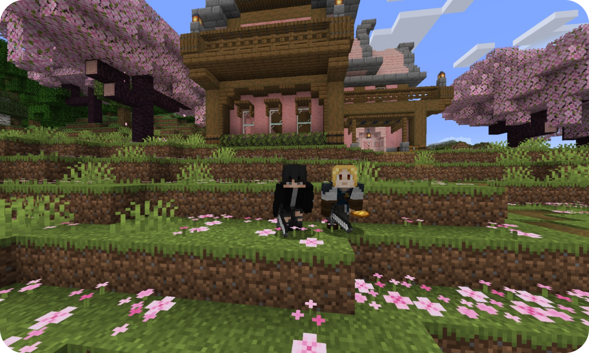
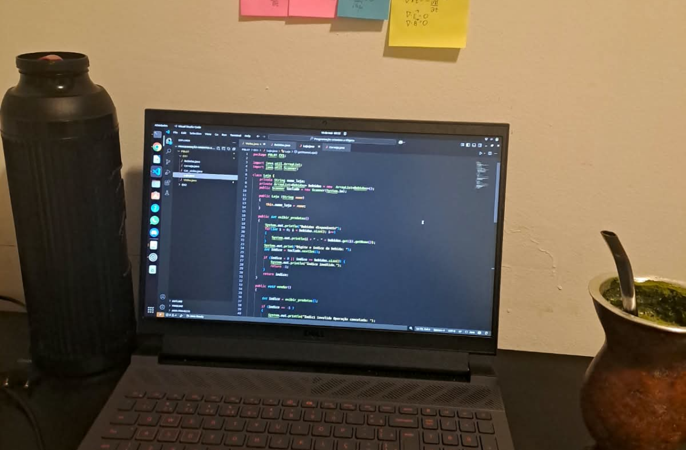
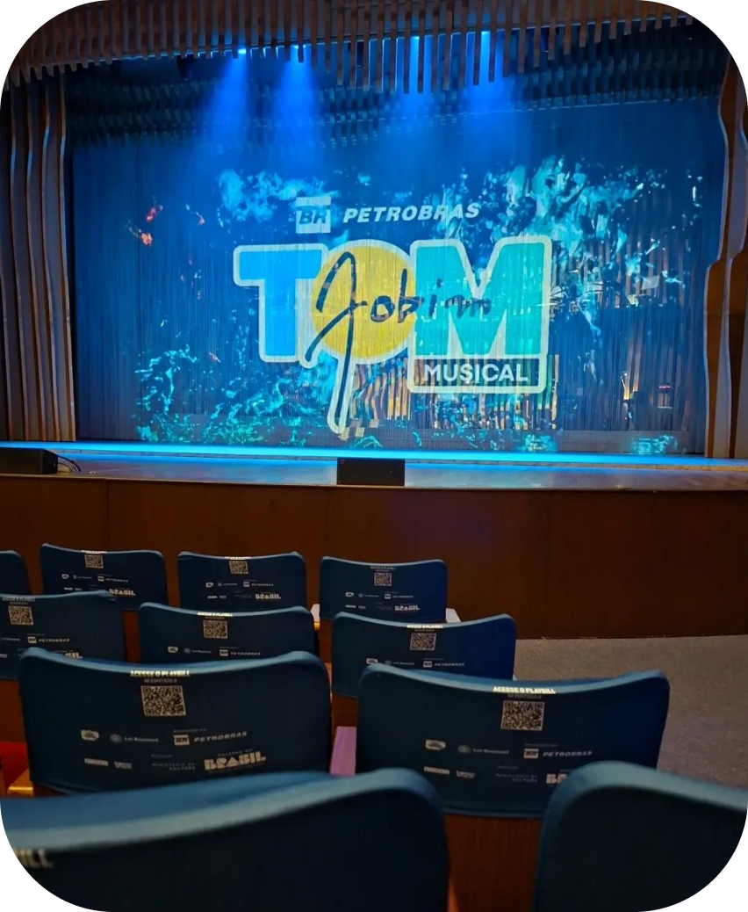

Olá meu nome é Hugo :D
Nasci em Curitiba, mas vivi sempre em Araucária. Cresci sempre gostando de praticar diversos esportes, como futebol, e fui bicampeão de capoeira. Sendo uma criança muito hiperativa e curiosa, sempre gostei de ver pessoas conversando e sorrindo. Admiro muito meu irmão. Viemos de uma família mais humilde e estudamos em escola pública. Com 14 anos, ele conseguiu passar na UFPR para cursar o técnico de petróleo e gás. A partir disso, nossa vida mudou: ele se distanciou de mim no ensino médio, porém sempre esteve me incentivando a estudar cada vez mais.


Sempre fui muito curioso e tive diversos hobbies, como desenhar, pintar, fazer bordado, praticar esportes e jogos online. Hoje em dia, gosto muito de cozinhar e aprender receitas novas.
Meu sonho quando era criança era visitar o Brasil inteiro e observar o quanto nosso país é bonito. Fiz minha primeira viagem em 2025 e consegui conhecer as Cataratas do Iguaçu.
Sempre gostei de ouvir música, ouço de tudo, porém o movimento hip hop é onde estão minhas músicas preferidas.

Junho de 94

Convoque seu Buda

Eu precisava voltar com a Folhinha
Meu ingresso no mundo da computação começou com o Minecraft: eu só queria jogar com meus amigos no multiplayer, mas isso me fez cair de cabeça no mundo da internet e da programação. Comecei a estudar de maneira autodidata, sempre ouvindo uma boa música.
Durante a pandemia, ingressei na primeira turma do cursinho popular AJA (Associação Juventude de Araucária), que tem como objetivo levar a população araucariense às universidades. Consegui passar em 2024 e, hoje, sou estudante de Ciência da Computação na PUCPR, seguindo essa mesma curiosidade que me trouxe até aqui.


Basicamente, minha rotina se concentra em estudos, esportes e jogos. Curso a faculdade de segunda a sexta e, há mais de um ano, faço um curso de inglês com o intuito de me tornar fluente, o que facilita a leitura de artigos científicos e o entendimento de novas culturas.
Durante a semana, também pratico esportes, treinando na academia com meu irmão, além de estudar matérias da faculdade ou de outras áreas, como Filosofia, Sociologia e História.
Gosto também de acompanhar o mundo do xadrez a partir do canal "Raffael Chess". Me apaixonei pelo jogo depois de ter visto a Imortal de Garry Kasparov contra Topalov, uma partida histórica e muito bonita.
Outro jogo que acompanho é Valorant, e estou aguardando o início do campeonato mais importante do ano, o Champions, torcendo para o único time brasileiro classificado, a LOUD.
Nas minhas férias, gosto de buscar conhecimento de outra forma: a partir de shows, leituras e vídeos. Isso porque, durante o ano, passo a maior parte do tempo focando e estudando o mundo da computação. Por isso, nas férias, gosto de variar os temas de estudo.
